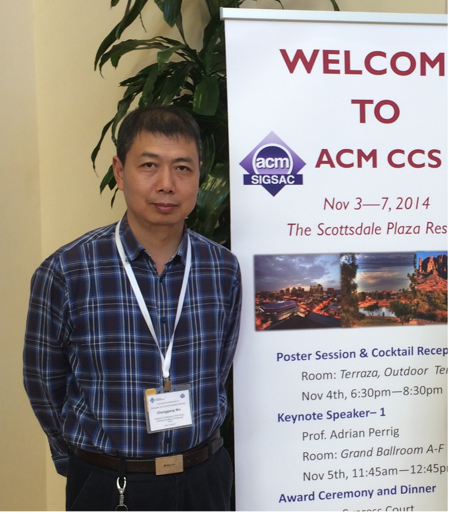

| |
Links
|
|
|
Chenggang Wu
Professor
Key Laboratory of Computer System and Architecture,
Institute of Computing Technology,
Chinese Academy of Sciences
Address:
POBox 2704-28
No 6. Kexueyuan South Road
Haidian District, Beijing 100190, China
Phone: +86-10-62600618
Email: wucg at ict dot ac dot cn
|

|
Education
I received my Ph.D. in Computer Science from Institute of Computing Technology (ICT) Chinese Academy of Sciences in 2001, and then I joined the faculty of the compiler group of ICT.
Research
My research interests include program analysis, dynamic compilation, and software security. We are researching the theory on understanding program behaviors by software tools. Our goal is to improve the performance, to reduce the power consumption, and to enhance the security of software application and system.
My work is founded by National Natural Science Foundation, the National Basic Research Program of China, the National High Technology Research and Development Program of China, the National Science and Technology Major Project of China.
Professional Services
Services in China Computer Federation
Director of Technical Committee of Computer Architecture of China Computer Federation
Services in Organizing Committee of Conferences
Steering Committee co-Chair of the 13th CCF Conference on Advanced in Computer Architecture (ACA 2020)
Publicity co-Chair of the 20th International Conference on Parallel Architectures and Compilation Techniques (PACT 2011)
General co-Chair of the 11th IEEE/ACM International Symposium on Code Generation and Optimization (CGO 2013)
Program co-Chair of 2013 International Conference on Advanced Parallel Processing Technology (APPT 2013)
Services in Program Committee of Conferences
Program Committee member of 17th ACM ASIA Conference on Computer and Communications Security (ACM ASIACCS 2022)
Program Committee member of The 30th International Conference on Parallel Architectures and Compilation Techniques (PACT 2021)
Program Committee member of 2018 ACM SIGPLAN symposium on Principles and practice of parallel programming (PPoPP 2018)
Program Committee member of 2017 ACM SIGPLAN symposium on Principles and practice of parallel programming (PPoPP 2017)
Program Committee member of 2018 ACM/IEEE International Symposium on Code Generation and Optimization (CGO 2018)
Program Committee member of 2017 ACM/IEEE International Symposium on Code Generation and Optimization (CGO 2017)
Program Committee member of 2016 ACM/IEEE International Symposium on Code Generation and Optimization (CGO 2016)
Program Committee member of 2015 ACM/IEEE International Symposium on Code Generation and Optimization (CGO 2015)
Program Committee member of 15th IEEE/ACM International Symposium on Cluster, Cloud and Grid Computing (CCGrid 2015)
Program Committee member of The 20th International Conference on Parallel and Distributed System (ICPADS 2014)
Program Committee member of 2014 International Conference on Principles and Practices of Programming on the Java platform (PPPJ 2014)
Program Committee member of 7rd Workshop on Architectural and Microarchitectural Support for Binary Translation (AMAS-BT 2014)
Program Committee member of 6rd Workshop on Architectural and Microarchitectural Support for Binary Translation (AMAS-BT 2013)
Program Committee member of The Second Asia-Pacific Programming Languages and Compilers Workshop (APPLC 2013)
Program Committee member of The first Asia-Pacific Programming Languages and Compilers Workshop (APPLC 2012)
Program Committee member of Multicore and GPU Programming Models, Languages and Compilers Workshop (PLC 2012)
Program committee member of the 33nd ACM SIGPLAN conference on Programming Language Design and Implementation (PLDI 2012)
Program Committee member of 5rd Workshop on Architectural and Microarchitectural Support for Binary Translation (AMAS-BT 2012)
Program Committee member of 4rd Workshop on Architectural and Microarchitectural Support for Binary Translation (AMAS-BT 2011)
Program Committee member of 3rd Workshop on Architectural and Microarchitectural Support for Binary Translation (AMAS-BT 2010)
Publications
Copyright Notice.
The below materials are distributed only for scholarly and technical work.
Copyright and all rights are reserved by authors and copyright holders.
All persons copying this information are expected to adhere to the terms and constraints invoked by each author's or organization's copyright.
In most cases, these works may not be reposted without the explicit permission of the copyright holder.
[The author with * is the correspondence author.]
2025--
Xingwei Li, Yan Kang, Chenggang Wu*, Danjun Liu, jiming Wang, Yue Sun, Zehui Wu, Yunchao Wang, Rongkuan Ma, Qiang Wei: Yesterday Once More: Facilitating Linux Kernel Bug Reproduction via Reverse Fuzzing. Accepted by IEEE Transactions on Information Forensics & Security (TIFS 2025 )
Yue Sun, Yan Kang, Chenggang Wu*, Kangjie Lu, Jiming Wang, Xingwei Li, Yuhao Hu, Jikai Ren, Yuanming Lai, Mengyao Xie, Zhe Wang: SyzParam: Incorporating Runtime Parameters into Kernel Driver. Accepted by the 32nd ACM Conference on Computer and Communications Security (CCS 2025).
Shiyang Zhang, Chenggang Wu, Chengxuan Hou, Jinglin Lv, Yinqian Zhang, Qianyu Guo, Yuaming Lai, Mengyao Xie, Yan Kang, Zhe Wang*:Tide: An Efficient Kernel-level Isolation Execution Environment on AArch64 via Dynamically Adjusting Output Address Size. Accepted by the 32nd ACM Conference on Computer and Communications Security (CCS 2025).
Peihua Zhang, Chenggang Wu, Hanzhi Hu, Lichen Jia, Mingfan Peng, Jiali Xu, Mengyao Xie, Yuanming Lai, Yan Kang, Zhe Wang*: Shining Light on the Inter-procedural Code Obfuscation. ACM Transaction on Architecture and Code Optimization (TACO 2024 )
2024--
Jiming Wang, Yan Kang, Chenggang Wu*, Yuhao Hu, Yue Sun, Jikai Ren, Yuanming Lai, Mengyao Xie, Charles Zhang, Tao Li, Zhe Wang : OptFuzz: Optimization Path Guided Fuzzing for JavaScript JIT Compilers. 33rd USENIX Security Symposium. (USENIX Security 2024 )
Peihua Zhang, Chenggang Wu, Xiangyu Meng, Yinqian Zhang, Mingfan Peng, Shiyang Zhang, Bing Hu, Mengyao Xie, Yuanming Lai, Yan Kang, Zhe Wang* : HIVE: A Hardware-assisted Isolated Execution Environment for eBPF on AArch64. 33rd USENIX Security Symposium. (USENIX Security 2024 )
Lei Chen, Shi Liu, Chenxi Wang, Haoran Ma and Yifan Qiao,Zhe Wang and Chenggang Wu, Youyou Lu, Xiaobing Feng and Huimin Cui, Shan Lu, Harry Xu : A Tale of Two Paths: Toward a Hybrid Data Plane for Efficient Far-Memory Applications. 18th USENIX Symposium on Operating Systems Design and Implementation. (OSDI 2024)
2023--
Bowen Tang, Chenggang Wu, Pen-Chung Yew, Yinqian Zhang, Mengyao Xie, Yuanming Lai , Yan Kang , Wei Wang， Qiang Wei， Zhe Wang*: SpecWands: An Efficient Priority-based Scheduler Against Speculation Contention Attacks. IEEE Transactions on Computer-Aided Design of Integrated Circuits and Systems . (TCAD 2023)
Jiali Xu, Mengyao Xie, Chenggang Wu, Yinqian Zhang, Qijing Li, Yan Kang, Wei Wang, Zhe Wang*: PANIC: PAN-assisted Intra-process Memory Isolation on ARM. The 30th ACM Conference on Computer and Communications Security (CCS). (CCS 2023 Distinguish Paper Award)
2022--
Chenggang Wu, Mengyao Xie, Zhewang*, Yinqian Zhang , Kangjie Lu , Xiaofeng Zhang , Yuanming Lai , Yan Kang , Min Yang , Tao Li: Dancing with Wolves: An Intra-process Isolation Technique with Privileged Hardware. IEEE Transactions on Dependable and Secure Computing， Volume 20, Issue 3(2022-04-19). (TDSC 2022)
Mengyao Xie, Chenggang Wu, Zhe Wang*, Yinqian Zhang, Jiali Xu, Yuanming Lai , Yan Kang, Wei Wang. CETIS: Retrofitting Intel CET for Generic and Efficient Intra-process Memory Isolation. The 29th ACM Conference on Computer and Communications Security.(CCS 2022 Best Paper Hornorable Mention Award)
Zhi Zhang, Yueqiang Cheng, Minghua Wang, Wei He, Wenhao Wang, Nepal Surya, Yansong Gao, Kang Li, Zhe Wang, Chenggang Wu: SoftTRR: Protect Page Tables against Rowhammer Attacks using Software-only Target Row Refresh. the 2022 USENIX Annual Technical Conference, July 11-13, 2022, Carlsbad, CA, USA.(USENIX ATC '22).
Bowen Tang, Chenggang Wu, Zhe Wang*, Lichen Jia, Pen-Chung Yew, Yueqiang Cheng, Yinqian Zhang, Chenxi Wang, Guoqing, Harry Xu . SPECBOX: A Label-Based Transparent Speculation Scheme Against Transient Execution Attacks. IEEE Transactions on Dependable and Secure Computing 05 Jan 2022. (TDSC 2022)
Shunfan Zhou, Zhemin Yang,Dan Qiao,Peng Liu ,Min Yang,Zhe Wang,Chenggang Wu: Ferry: State-Aware Symbolic Execution for Exploring State-Dependent Program Paths. USENIX Security 2022 August 10-12, 2022, Boston, MA, USA.
2021--
Zhe Wang, Chenggang Wu*, Yinqian Zhang, Bowen Tang, Pen-Chung Yew,Mengyao Xie, Yuanming Lai, Yan Kang, Yueqiang Cheng, and Zhiping Shi: Making Information Hiding Effective Again. IEEE Transactions on Dependable and Secure Computing 05 March 2021. (TDSC 2021)  download download
2020--
Zhe wang, Chenggang Wu*: SEIMI: Efficient and Secure SMAP-Enabled Intra-process Memory Isolation. 41st IEEE Symposium on Security and Privacy (IEEE S&P 2020) download
2019--
Zhe wang, Chenggang Wu*, Yinqian Zhang, Pen-Chung Yew, Mengyao Xie, Yuanming Lai, Yan Kang, Yueqiang Cheng, and Zhiping Shi: SafeHidden: An Efficient and Secure Information Hiding Technique Using Re-randomization. 28th USENIX Security Symposium download
2017--
Zhe wang, Chenggang Wu*, Xiang Yuan, Zhenjiang Wang, Jianjun Li, Pen-Chung Yew, Jeff Huang, Xiaobing Feng, Yanyan Lan, Yunji Chen and Yong Guan: Using Local Clocks to Reproduce Concurrency Bugs. IEEE Transactions on Software Engineering (TSE 2017) download
Zhe Wang, Chenggang Wu*, Jianjun Li, Yuanming Lai, Xiangyu Zhang, Wei-Chung Hsu, Yueqiang Cheng: RERANZ: A Light-Weight Virtual Machine to Mitigate Memory Disclosure Attacks. the 13th ACM SIGPLAN/SIGOPS International Conference on Virtual Execution Environment (VEE 2017) April 08 - 09, 2017, Xi'an, China. download
Download Source Code
Qixue Xiao, Yu Chen*, Chenggang Wu*, Kang Li, Junjie Mao, Shize Guo and Yuanchun Shi: pbSE: Phase-based Symbolic Execution. The 47th IEEE/IFIP International Conference on Dependable Systems and Networks(DSN 2017). June 26-29, 2017. Denver,CO,USA download
2015--
Xiang Yuan, Chenggang Wu*, Zhenjiang Wang, Jianjun Li, Pen-Chung Yew, Jeff Huang, Xiaobing Feng, Yanyan Lan, Yunji Chen and Yong Guan: Reproducing Concurrency Bugs Using Local Clocks. ACM/IEEE 37th International Conference on Software Engineering (ICSE 2015).16-25 May, 2015. Firenze, Italy. download
Zhe Wang, Jianjun Li, Chenggang Wu*, Dongyan Yang, Zhenjiang Wang, Wei-Chung Hsu, Bin Li, Yong Guan: Practical Implementation and Efficient Management of Embedded Shadow Page Tables for Cross-ISA System Virtual Machines. The 11th ACM SIGPLAN/SIGOPS International Conference on Virtual Execution Environment (VEE 2015) 14-15 March, 2015, Istanbul, Turkey. download
Download Source Code
Chenggang Wu, Jin Li, Di Xu, Pen-Chung Yew, Jianjun Li, and Zhenjiang Wang*: FPS: A Fair-progress Process Scheduling Policy on Shared-Memory Multiprocessors. IEEE Transactions on Parallel and Distributed Systems Volume:26, Issue:2; page 444-454, Feb 2015 (TPDS 2015). download
2014--
Wenwen Wang,Zhenjiang Wang, Chenggang Wu*, Pen-Chung Yew, Xipeng Shen, Xiang Yuan, Jianjun Li, Xiaobing Feng and Yong Guan: Localization of Concurrency Bugs Using Shared Memory Access Pairs.29th IEEE/ACM International Conference on Automated Software Engineering (ASE 2014) September 15 - 19, 2014 Sweden download
Hui Guo, Zhenjiang Wang, Chenggang Wu* and Ruining He: EATBit: Effective Automated Test for Binary Translation with High Code Coverage. Design, Automation & Test in Europe (DATE 2014) . 24-28 March, 2014-Dresden, Germany. download
Jianjun Li, Zhenjiang Wang, Chenggang Wu*, Wei-Chung Hsu, Di Xu: Dynamic and Adaptive Calling Context Encoding. International Symposium on Code Generation and Optimization (CGO 2014) . February 15-19, 2014, Orlando, Florida.
download
2013--
Xiang Yuan, Zhenjiang Wang, Chenggang Wu*, Pen-Chung Yew, Wenwen Wang, Jianjun Li, and Di Xu: Synchronization Identification through On-the-fly Test. Euro-Par 2013 ,Aachen, Germany, August 26-30, 2013. download
2012--
Di Xu, Chenggang Wu*, Pen-Chung Yew, Jianjun Li, Zhenjiang Wang: Providing Fairness on Shared-Memory Multiprocessors via Process Scheduling. SIGMETRICS/Performance 2012 , London, United Kingdom, June 11-15, 2012. download
Zhengjiang Wang, Chenggang Wu*, Pen-Chung Yew, Jianjun Li and Di Xu: On-the-fly Structure Splitting for Heap Objects. ACM Transactions on Architecture and Code Optimization (TACO 2012) ,January 2012, Volume 8 Issue 4 / 7th International Conference on High-Performance and Embedded Architectures and Compilers(HiPEAC) . January 23-25, 2012, Paris, France
download
2011--
Jianjun Li, Chenggang Wu, Wei-Chung Hsu: Efficient and Effective Misaligned Data Access Handling in a Dynamic Binary Translation System. ACM Transactions on Architecture and Code Optimization (TACO 2011), Vol. 8, No. 2, Article 7.
download
Jianjun Li, Chenggang Wu*, Wei-Chung Hsu: Dynamic Register Promotion of Stack Variables. IEEE/ACM International Symposium on Code Generation and Optimization (CGO 2011). April 02-06, 2011, Chamonix, France.
download
Zhenjiang Wang, Chenggang Wu*: Dynamic Pool Allocation on Improving Heap Data Locality. Chinese Journal of Computers.
2010--
Di Xu, Chenggang Wu*, Pen-Chung Yew: On Mitigating Memory Bandwidth Contention through Bandwidth-Aware Scheduling. International Conference on Parallel Architectures and Compilation Techniques (PACT2010). Sept 11-16, Vienna, Austria.
download
Zhenjiang Wang, Chenggang Wu*, Pen-Chung Yew: On Improving Heap Memory Layout by Dynamic Pool Allocation. IEEE/ACM International Symposium on Code Generation and Optimization (CGO 2010). April 24-28, 2010, Toronto, Ontario, Canada. p92-100
download
2009--
Jianjun Li, Chenggang Wu*, Wei-Chung Hsu: Evaluating Misaligned Data Access Handling Mechanisms in Dynamic Binary Translation Systems. IEEE/ACM International Symposium on Code Generation and Optimization (CGO 2009). March 22-25, 2009, in Seattle, WA. P180-189.
download
2008--
Jing Li, Chenggang Wu: A New Replacement Algorithm on Content Associative Memory for Binary Translation System. 1st Workshop on Architectural and Microarchitectural Support for Binary Translation. Beijing, China. April 2008. p45-54
Long Chen, Chenggang Wu, Haibin Xie, Huimin Cui, Zhaoqing Zhang: Using Graph Match Method to Resolve Multi-Way Branch in Binary Translation. Journal of Computer Research and Development. 2008 45(10). Page 1789~1798
2007--
Haibin Xie, Chenggang Wu, Huimin Cui, Jing Li: Disposing X86 FPU Stack in Binary Translation. Journal of Computer Research and Development. 2007 44(11). Page 1946-1954.
Feng Tang, Chenggang Wu, Xiaobing Feng, Zhaoqing Zhang: EfLA Algorithm Based on Dynamic Feedback. Journal of Software.2007 18(7). Page 1603-1611.
2006--
Feng Tang, Chenggang Wu, Zhaoqing Zhang, Hao Yang: Exception Handling in Application Level Binary Translation. Journal of Computer Research and Development. 2006 43(12). Page 2166-2173
Xuelin Shi, Zhaoqing Zhang, Chenggang Wu: Mapping Cobol Data to Java Type System with Functional Equivalence. Journal of Computer Research and Development. 2006 43(2). Page P.336-342.
Hao Yang, Feng Tang, Haibin Xie, Chenggang Wu, Xiaobing Feng: Library Function Disposing Approach in Binary Translation. Journal of Computer Research and Development.2006 43(12). Page 2174-2179.
2005--
Xiangning Ma, Chenggang Wu, Feng Tang, Xiaobing Feng, Zhaoqing Zhang: Two Condition Code Optimization Approaches in Binary Translation. Journal of Computer Research and Development.2005 42(2). page 329-337.
2004--
Chenggang Wu, Zhaoqing Zhang, Ruliang Qiao, Xiaobing Feng, Lin Gao, Xuelin Shi, Hongshan Jiang, Huimin Cui: Converting the Compound Control Structure of PERFORM and GOTO Statements in Code Translation. Journal of Software. 2004 15(4) .page 475-486
|
|